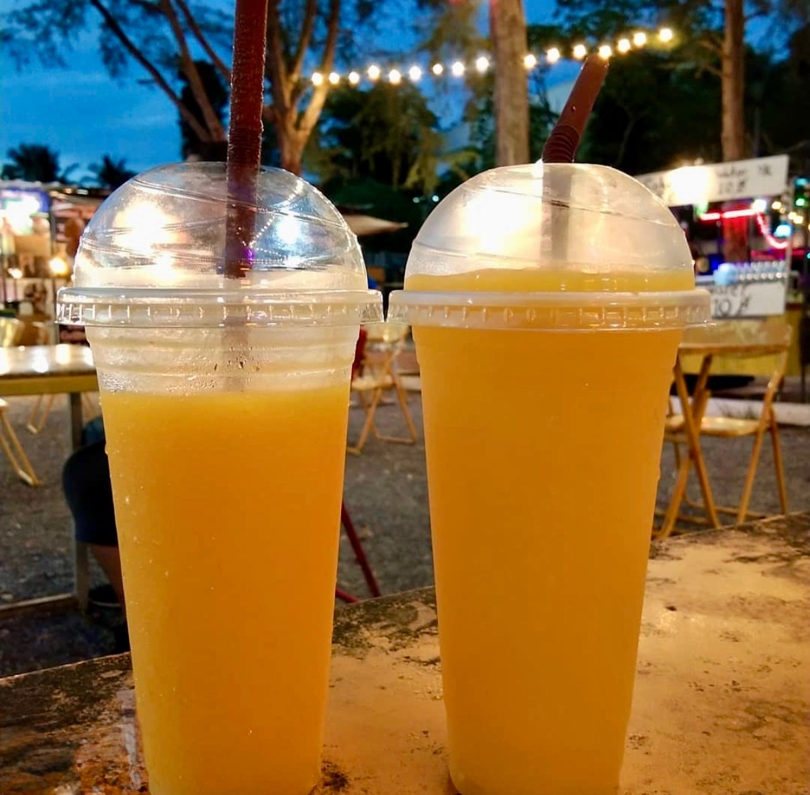

Every travel blog about Krabi looks the same. The limestone cliffs. The longtail boats. The impossibly green water shot from the exact same angle on Railay Beach. You've seen it all before you even book your ticket.
This isn't that blog post.
This is what Krabi actually felt like — the calm that surprised me, the sun that didn't, and the two mango smoothies that might be the most honest memory I brought home.
What nobody prepares you for — the quiet
You arrive expecting Thailand's famous chaos. Tuk-tuks. Hawkers. The relentless noise of a city that never sleeps. And then Krabi just… doesn't do that. There's a softness to it. The kind of place where you realise you've been holding tension in your shoulders for months and you've only just noticed because it's gone.
The beaches aren't fighting for your attention. The islands don't feel like tourist products. The nature here hasn't been packaged and sold back to you — it's just there, indifferent and magnificent, doing what it has done for thousands of years.
"Krabi doesn't perform for you. It just exists. That's rarer than you think."
The photo that tells the real story

This is the photo I kept coming back to. Not the cliffs. Not the islands. Two plastic cups of mango smoothie at a night market, fairy lights strung between palm trees, my wife beside me, nowhere to be.
Every travel influencer will show you the aerial drone shot of the Phi Phi islands. Nobody shows you this — the unhurried evening, the affordable freshness of local fruit, the simple fact of being somewhere beautiful without trying to capture it.
The Krabi night market is one of those places that exists for locals first and tourists second. That's exactly why it works. You're not a spectacle there. You're just someone eating dinner.
The one thing that actually annoyed me
The island hopping tours are spectacular — genuinely. The water is cleaner than you expect, the islands look exactly like the photos (which almost never happens), and the scale of the landscape from a boat is something you can't fully appreciate until you're in it.
But nobody warns you about the sun on a jet boat.
You're moving fast, you're on open water, and the sun is reflecting off the surface directly into your face. There's nowhere to escape it. By hour two you're not admiring the scenery — you're just trying to survive. Sunscreen helps. A hat helps more. A good pair of polarised sunglasses is non-negotiable.
It's a small thing. But it's the kind of small thing that no travel guide mentions because it doesn't make the destination look bad — it just makes your day slightly uncomfortable if you're not ready for it.
What made it worth every minute
The islands. Specifically, the fact that they're clean.
In an era where "pristine beach" is code for "we didn't photograph the plastic," Krabi's islands hold up. The daily tours take you through a circuit of landscapes that genuinely change — rocky outcrops, hidden lagoons, open bays, narrow passages between cliffs that feel like the earth parting for you. Each stop looks different from the last.
The water is that colour. Yes, really. It actually looks like that.
"Yes. A hundred times yes."
Krabi is one of those rare places that delivers on its promise. Go for the islands, stay for the calm, eat at the night market, and bring polarised sunglasses on the boat.
Planning a trip to Krabi? Let AI build your itinerary in 30 seconds.
Plan My Krabi Trip →